This page features every Detroit Red Wings team that has won the Stanley Cup Champoinship. The Stanley Cup is the coveted trophy of the National Hockey League that is awarded to the team who wins the playoff tournament.
2008 Stanley Cup Championship Team
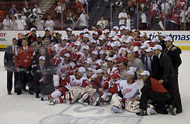
The Detroit Red Wings won their 11th Stanley Cup in 2008. This team had the best regular season record of any team in the NHL. Photo Credit: Wikipedia
2002 Stanley Cup Championship Team
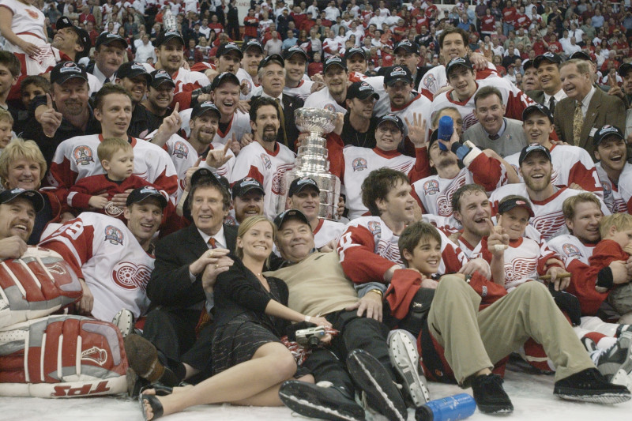
In 2002 the Detroit Red Wings featured one of the best teams the NHL had ever seen. This team features 10 members in the Hall of Fame, with at least 5 more expected to be inducted when they become eligible. Photo Credit: Elsa/GettyImages
1998 Stanley Cup Championship Team
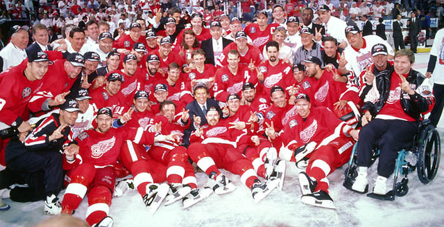
The Detroit Red Wings won the Stanley Cup for the second year in a row in 1998. They met the Washington Capitals in the Stanley Cup Finals and won the series 4 games to none. Photo Credit: PRESIDENT
1997 Stanley Cup Championship Team
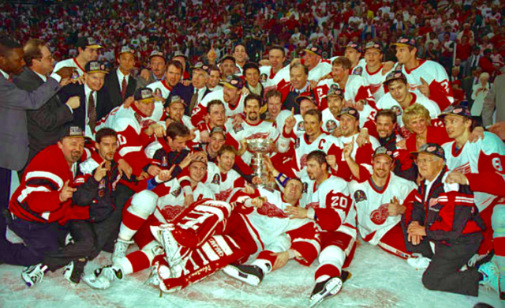
The Detroit Red Wings won the Stanley Cup after a 42 year drought in 1997. They had been cup contenders for a few years but faced heartbreak in the playoffs until 1997. Photo Credit: PRESIDENT
1955 Stanley Cup Championship Team
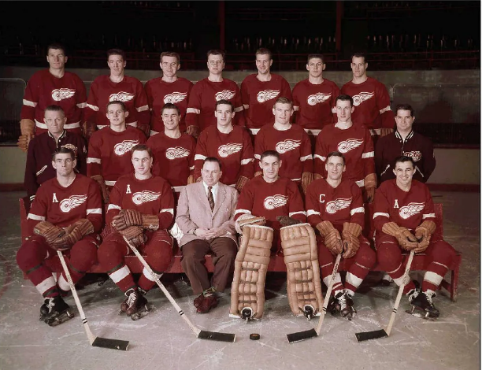
The Detroit Red Wings won the Stanley Cup for the second year in a row in 1955. They played against the Montreal Canadiens in the Stanly Cup Final and won 4 games to 3. Photo Credit: The Canadien Press
1954 Stanley Cup Championship Team
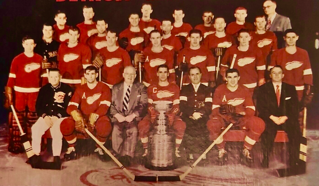
The Detroit Red Wings won their 6th Stanley Cup in 1954. This team featured many great Red Wings players including Gordie Howe, Sid Abel, Terry Sawchuck, Red Kelly, and Alex Delvecchio. Photo Credit: PRESIDENT
1952 Stanley Cup Championship Team
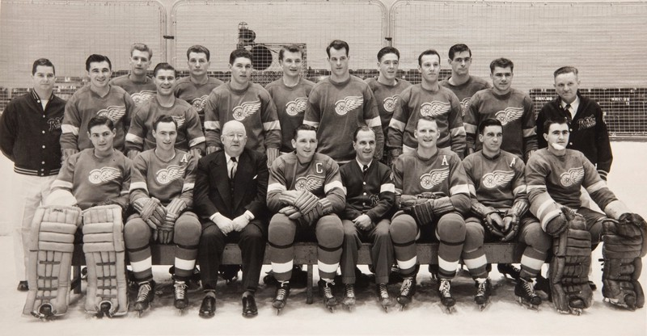
In 1952 the Detroit Red Wings won the Stanley Cup. From 1950 to 1955 the Detroit Red Wings won the Stanley Cup 4 times. They beat the Montreal Canadiens in 4 games to become cup champoins. Photo Credit: Herigate Actions
1950 Stanley Cup Championship Team
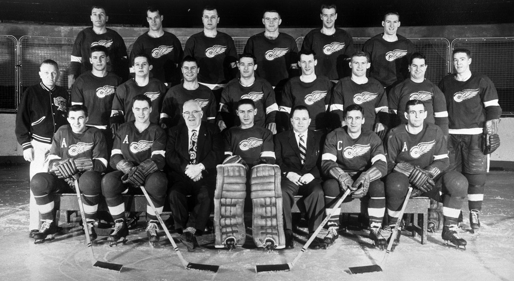
The Detroit Red Wings won the Stanley Cup in 1950. They swept the New York Rangers in 4 games to win their first Stanley Cup in 6 years. Photo Credit: Hockey Hal of Fame
1943 Stanley Cup Championship Team
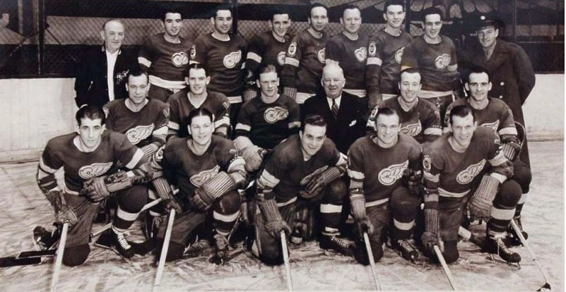
In 1943 the Detroit Red Wings won the Stanley Cup. This team featured 4 Hall of Fame Players. Photo Credit: Ice Hockey Wiki
1937 Stanley Cup Championship Team
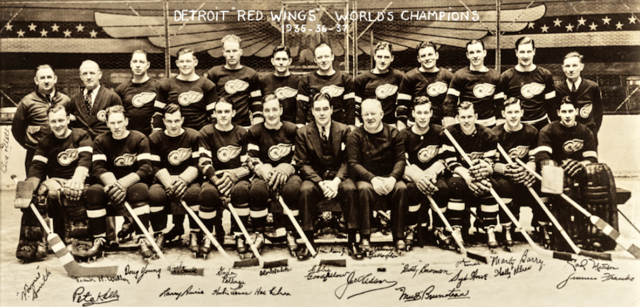
The Detroit Red Wings won the Stanley Cup for a second straigth year in 1937. It was the franchise's second cup championship. Photo Credit: PRESIDENT
1936 Stanley Cup Championship Team
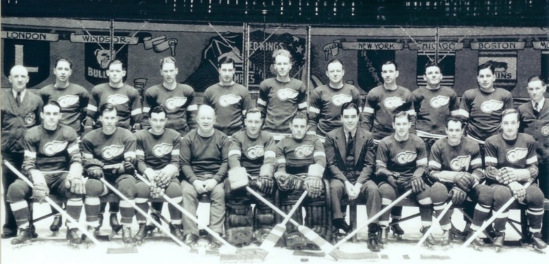
The Detroit Red Wings won the Stanley Cup for the first time in franchise history in 1936. The team was in its 10th season after being establihed in 1926. Photo Credit: eBay